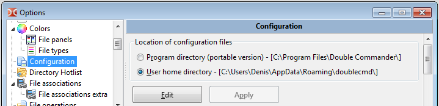
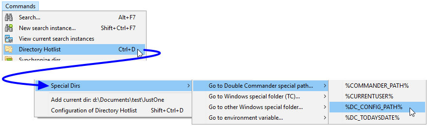

Main settings of Double Commander are saved/restored to/from an XML file named doublecmd.xml.
The location of this doublecmd.xml file may be in different places:
We follow this link if we want to specify it by with the command line paramter --config-dir.
Other than that, we do Configuration > Options > select in the tree > set the option Location of configuration files.

Another way to quickly find out where is located the doublecmd.xml the current instance of Double Commander is using is by accessing the Directory Hotlist. At the end of it there is a sub section called "Special Dirs". Then we select "Go to Double Commander special path" and then "%DC_CONFIG_PATH%". We will find there the doublecmd.xml that application is currently using.

The large majority of possible settings in Double Commander may be set via the application itself through the various option categories.
We simply click from the main menu bar Configuration > Options and the various settings we'll configured there will be saved to the doublecmd.xml file when we close the application. Then, they will be restored on the next usage of the application.
So generally, we don't have to manually edit the content of the configuration file.
But there are some very rare specific settings that required to be edited manually from the configuration file if we want to tweak the application.
WARNING: We will not edit that file WHILE Double Commander is running! Not only because anyway their values are read only when we're starting the application, but also because if we edited the file while DC is running, when we'll close the application the values we would have wrote will be overwritten by the application re-saving its current context for next session. If we need to edit the doublecmd.xml file, we need to make sure we close Double Commander, then we edit file, and then we re-launch the application.
The following table gives us these rare specific settings that we need to manually edit the file if we need to change them:
| Setting required to be changed manually if necessary | |||||||||||||||||||||
|---|---|---|---|---|---|---|---|---|---|---|---|---|---|---|---|---|---|---|---|---|---|
| Tag | Description | ||||||||||||||||||||
<ActiveRight> from <Behaviours> |
The right panel will be active when Double Commander starts.
<ActiveRight>True</ActiveRight>
|
||||||||||||||||||||
<SingleClickStart> from <Behaviours><Mouse> |
This will determine what will launch the action when we're using the mouse button on an element from the displayed file list in a panel.
If we want... ...a single click opens files and folders: 1 + 0 = 1 so <SingleClickStart>1</SingleClickStart>...a single click only opens folders, for files, a double click is needed: 2 + 0 = 2 so <SingleClickStart>2</SingleClickStart>...a single click opens files and folders, the text cursor not follows the mouse cursor: 1 + 4 = 5 so <SingleClickStart>5</SingleClickStart>...a single click only opens folders, the text cursor not follows the mouse cursor: 2 + 4 = 6 so <SingleClickStart>6</SingleClickStart> |
||||||||||||||||||||
<Quality> from many tags <Fonts> |
Determine what type of font rasterization that will be used. In other words, it determine the font quality. There are many tags where it's applicable individually.
<Quality>1</Quality>
| ||||||||||||||||||||
<gBorderFrameWidth> from <Colors> |
We may configure DC so it will draw a rectangle around the active entry as we we cycle through them in a panel. This <gBorderFrameWidth> setting allows us to configure the width of the lines used to draw a rectangle around the current active entry. To view that rectangle, we must go in Configuration > Options > Colors > File panels and check the option Use frame cursor. Example: <gBorderFrameWidth>1</gBorderFrameWidth>
|
||||||||||||||||||||
<Info>, <Error> and <Success> from <Colors><LogWindow> |
Change text color of log window (info, error, success messages). We can set color as hex number using format $BBGGRR. For example, if we want to use blue color for text of info messages: <Info>$FF0000</Info> |
||||||||||||||||||||
<AutoSaveWidth> from <FilesViews><ColumnsView> |
When we manually change the column width with the mouse help, by default DC changes it for both panels and saves a new value for the next launches. If we want to disable this behavior and use new value only in the current session, we must replace True with False, i.e. use <AutoSaveWidth>False</AutoSaveWidth>. |
||||||||||||||||||||
<TitleStyle> from <FilesViews><ColumnsView> |
Changes the look of tabstop headers bar. Default value depends on your OS.
<TitleStyle>2</TitleStyle>
|
||||||||||||||||||||
<ExtraLineSpan> from <FilesViews> |
This setting allows to add some extra pixels to the height allowed for each element displayed in the file panels. The value is interpreted directly in pixels. Default value is 2. Example: <ExtraLineSpan>2</ExtraLineSpan>
|
||||||||||||||||||||
<FolderPrefix> and <FolderPostfix> from <FilesViews>(Version 1.0.0 +) |
By default DC shows square brackets around directory names (it's optional parameter in Files views > Files views extra), but we can use any symbols instead them. Note: In XML some special symbols are reserved as part of markup and we can not use them as is. There are five predefined entities: < should write as <, > as >, & as &, ' as ' and " as ".
|
||||||||||||||||||||
<NtfsHourTimeDelay> from <FileOperations> |
Ignore time difference of exactly one hour between entries when comparing their date and time. This takes place when using internal commands cm_CompareDirectories or cm_SyncDirs. It is useful when comparing items located on a NTFS partition to another one not on such partition. Since the time stamp of a file changes on a NTFS partition when daylight savings period occurs and not when the same exact file is from a FAT32, we want the two files to be consider identical even if we visibly see a one hour difference between the two.
<NtfsHourTimeDelay>True</NtfsHourTimeDelay>
| ||||||||||||||||||||
<AutoExtractOpenMask> from <FileOperations> |
Suppose we've "entered" into a compressed file and browing its content in the active panel. The files with the specified extension of this setting will be automatically unpacked from the archive when we press Enter or double-click on them instead of showing the properties window. Example: <AutoExtractOpenMask>*.txt;*.mp3;*.mp4</AutoExtractOpenMask> |
||||||||||||||||||||
<UseShellForFileOperations> (Version <= 0.9.x) |
To use the rename function as in Explorer. Works correctly with UAC.
<UseShellForFileOperations>True</UseShellForFileOperations>
|
||||||||||||||||||||
<Mode> from <AutoRefresh> |
The ability to delete watched directories. A "watched directory" is a directory that Double Commander has a kind of hook on it so it can monitor any modification in it. This way, it can refresh the displayable content of it if it's content changed. This setting allows to control how Double Commander will react if we attempt to delete one of these "watched directory" currently displayed in a panel, even in a non-activated tab.
<Mode>1</Mode>
|
||||||||||||||||||||
<CustomIcons> from <Icons> |
This option will help to determine if the icons used for drives, folders or archives will be the default ones from the system (Windows only) OR if it will be custom ones that we may set ourselves. The CustomIcons option will be set to a single number representing the sum of the numbers from the following table depending on what are our preferences:
If we want... ...everything from the system: 0 + 0 + 0= 0 so <CustomIcons>0</CustomIcons>...everything custom: 1 + 2 + 4 = 7 so <CustomIcons>7</CustomIcons>...drive custom, other system: 1 + 0 + 0 = 1 so <CustomIcons>1</CustomIcons>etc... If we wish to use custom icons, here is the location for each items:
|
||||||||||||||||||||
<DiskAlpha> from <Icons> |
Option to set the transparency level of unmounted drive icons.
|
||||||||||||||||||||
<ImageExifRotate> from <Viewer> |
Double Commander is able to recognize the metadata from Exif structure that might be encoded into a JPG image file. Inside that structure, there is an orientation flag that may be used to display the picture into the same orientation as it was taken like if was in portrait, landscape, upside-down, mirror, etc. The ImageExifRotate tag configures Double Commander to indicate if we want the viewer to display the image using that information or not.
<ImageExifRotate>True</ImageExifRotate>
|
||||||||||||||||||||
<MaxTextWidth> from <Viewer> |
For the internal viewer, configure the maximum number of characters to be displayed on one text line prior to wrap it up to the next one. The valid range goes from 80 to 16384 and default value is 1024. Example: <MaxTextWidth>1024</MaxTextWidth>
|
||||||||||||||||||||
<TabSpaces> from <Viewer> |
For the internal viewer, set the width of tab stops to use. The valid range goes from 1 to 32 and default value is 8. Example: <TabSpaces>4</TabSpaces>
|
||||||||||||||||||||
<Added>, <Deleted> and <Modified> from <Differ><Colors>(Version 1.0.0 +) |
Change colors in the internal Differ tool (file comparison) for added, deleted and modified lines. We can set color as hex number using format $BBGGRR, see example above. |
||||||||||||||||||||
Attribute Save from <SyncDirs><Asymmetric> |
Synchronize directories: save or not asymmetric mode by default. If we want to save state of mode then <Asymmetric Save="True">
or <Asymmetric Save="False"> otherwise (by default). |
||||||||||||||||||||
<PathToLibrary> from <Lua> |
This is the path to indicate where is the Lua library. It will indicate the location of the required dll file lua5.1.dll when doing Lua Scripting. This path may be relative to the Double Commander executable file. Example: <PathToLibrary>..\..\Other\dll\lua5.1.dll</PathToLibrary> |
||||||||||||||||||||